BASKETBALLKEEP
Dynasty · Redraft · Hardwood
Fun tape · not news
The X
NBA memes and shitposts pulled from X. Pictures when the wire carries them.
 Reddit
RedditBlazers 1st round picks since 00
submitted by /u/GoonLieutenant [link] [comments]
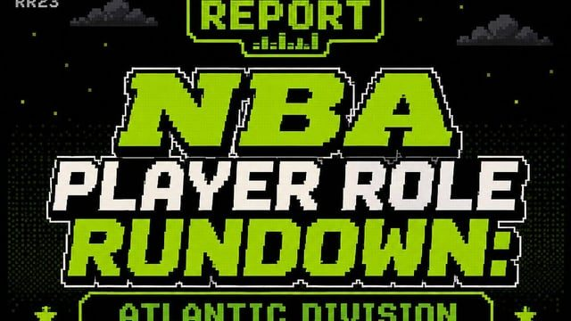
RedditNBA Player Role Rundown: Atlantic Division
submitted by /u/buhhlockaye [link] [comments]
 Reddit
RedditLuka and Reaves Face off in a Reaction Time Test
submitted by /u/BcuzRacecar [link] [comments]
 Reddit
RedditKlay Thompson on Giannis Antetokounmpo and his impact: "His interior scoring is one of the best ever, and his jump shot is greatly improved. Now you can't sag off him like you used
This was the last question from the press conference. Klay also mentioned earlier that Giannis had yet to reach out to him, but Bam did. He
 Reddit
RedditKlay Thompson on where he is now physically in comparison to 3-4 years ago. "I can do it at a high level. The durability for me has been huge plus... it's nice to walk on the floor
"We're talking about a conditioning test last night, so I'm happy I got 5 weeks to really prepare for the Miami regimen" submitted by /u/MrB
 Reddit
RedditKlay Thompson explains that the reasons he gave up a lot of money and joined the Miami Heat have to do with the opportunity to play high-level basketball and make a deep postseason
submitted by /u/MrBuckBuck [link] [comments]
 Reddit
RedditErik Spoelstra and Klay Thompson take photos with Klay Thompson's new Miami Heat jersey.
submitted by /u/MrBuckBuck [link] [comments]
 Reddit
RedditKlay Thompson has officially arrived in Miami and now begins his tenure with the Heat.
submitted by /u/Subject-Property-343 [link] [comments]
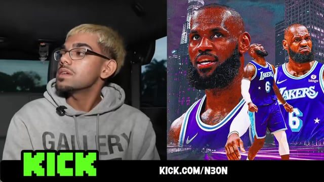
RedditDelonte West says Lebron James and his mother Gloria James both reach out to check on him
submitted by /u/Mtown11111 [link] [comments]
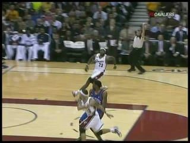
RedditLeBron James throws down the NASTY alleyoop off of a pass from Delonte West but unfortunately West was fouled so the dunk doesn’t count
Rule submitted by /u/WestleyThe [link] [comments]
RedditMichael Porter Jr. and Lonzo Ball say they would press a button that causes one random person to die for $1 billion
submitted by /u/RyanTannegod [link] [comments]
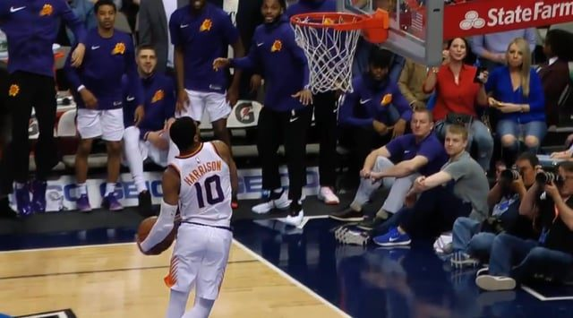
Reddit[Highlights] Shaquille Harrison soars up high for the alley-oop dunk, the putback dunk, and the windmill dunk (with replays) In the final game of the season. 4/10/2018
Phoenix Suns vs. Dallas Mavericks - 4/10/2018 submitted by /u/MrBuckBuck [link] [comments]
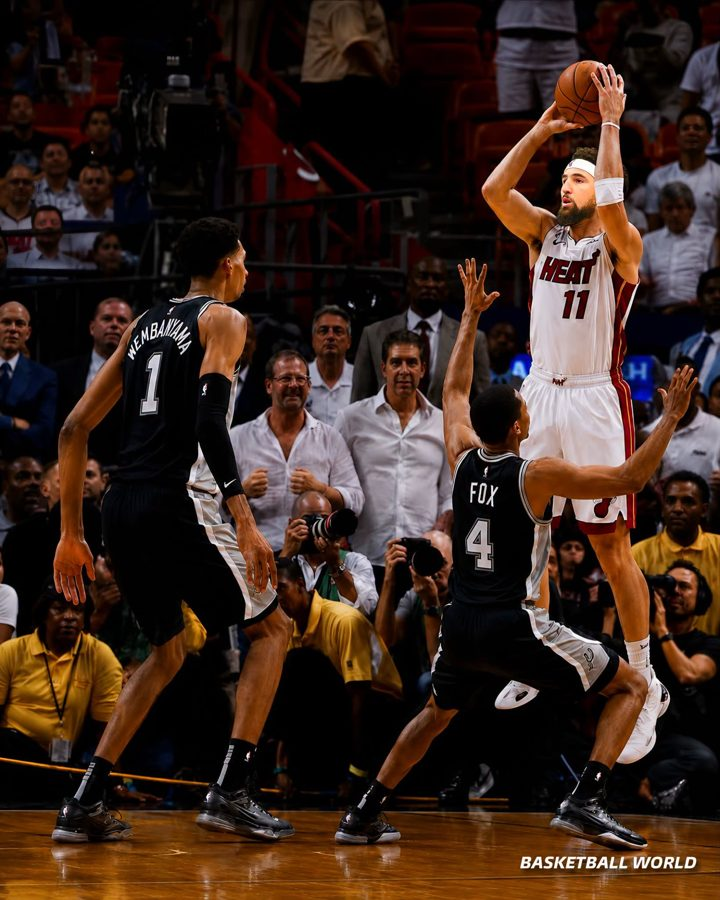
RedditKlay with his 10 straight 3-pointers to cut the lead to 42
submitted by /u/Thanos_Real_AuraVNCH [link] [comments]
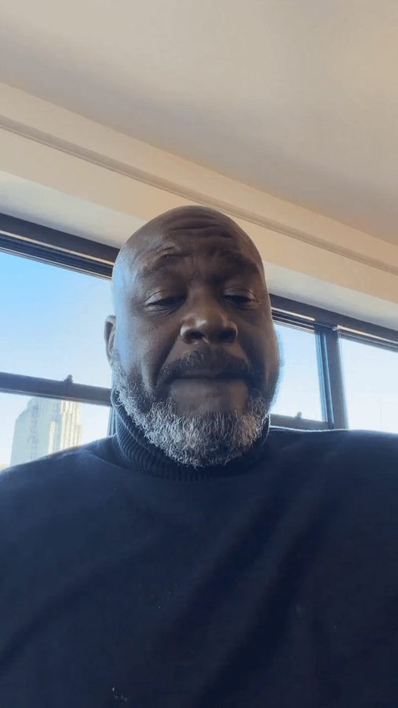
RedditWhere does Shaq rank in the alltime indian nba player discussion
submitted by /u/WholeDonkey2689 [link] [comments]
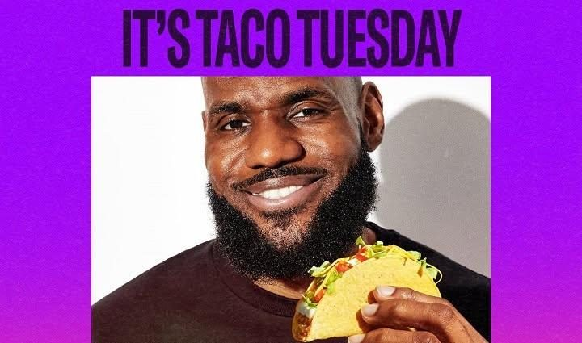
RedditYOU KNOW WHAT TODAY IS!!!
submitted by /u/Clippers_Nation2 [link] [comments]
 Reddit
RedditThe All-NBA Conspiracy Theory Team
submitted by /u/WhenMachinesCry [link] [comments]
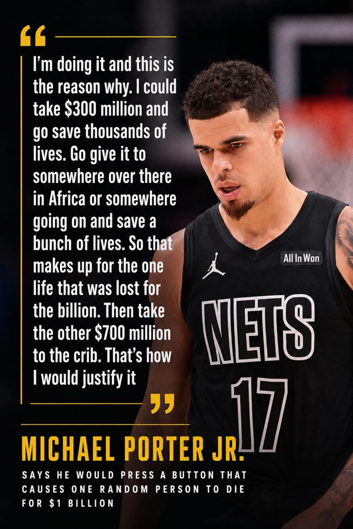
Reddit30/70 split is an incredible bit
submitted by /u/WhenMachinesCry [link] [comments]
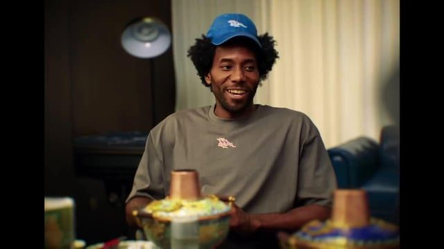
RedditKawhi Leonard's official Instagram posted a video about his time in Chengdu, China. The beginning of the video shows a phone browsing social media, featuring ESPN's headline of no
The phone and the text on the posts are slightly blurred, but still clearly identifiable because of the pictures and account being a popular
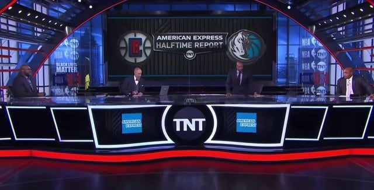
Reddit[Highlight] Kenny Smith tries to tell a story about what Hakeem Olajuwon used to say to him, but Charles Barkley interrupts
submitted by /u/Free_Ad8359 [link] [comments]
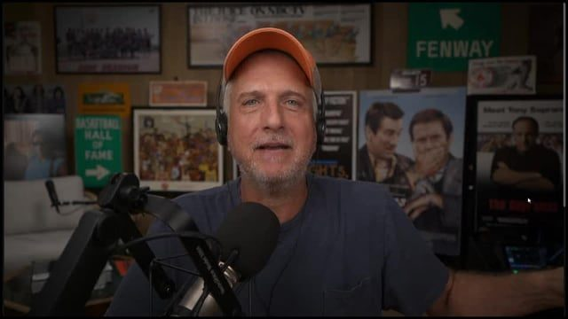
RedditBill Simmons reading mailbag question: "Why couldn't East contender trade for Bronny for the sole purpose of guarding LeBron during key moments in a playoff series? No way he is lo
submitted by /u/luka274 [link] [comments]
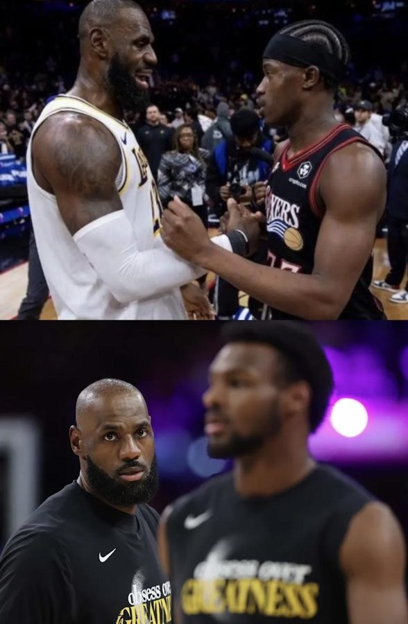
RedditLeBron’s oldest son is 9 months and 24 days OLDER than VJ Edgecome 😭
More fun facts, both Bronny & VJ are juniors… Yes, Bronny James is a junior. His full legal name is LeBron Raymone James Jr., as he is the o
RedditHappy 8/24 🐍🖤
submitted by /u/AppropriateMight1 [link] [comments]
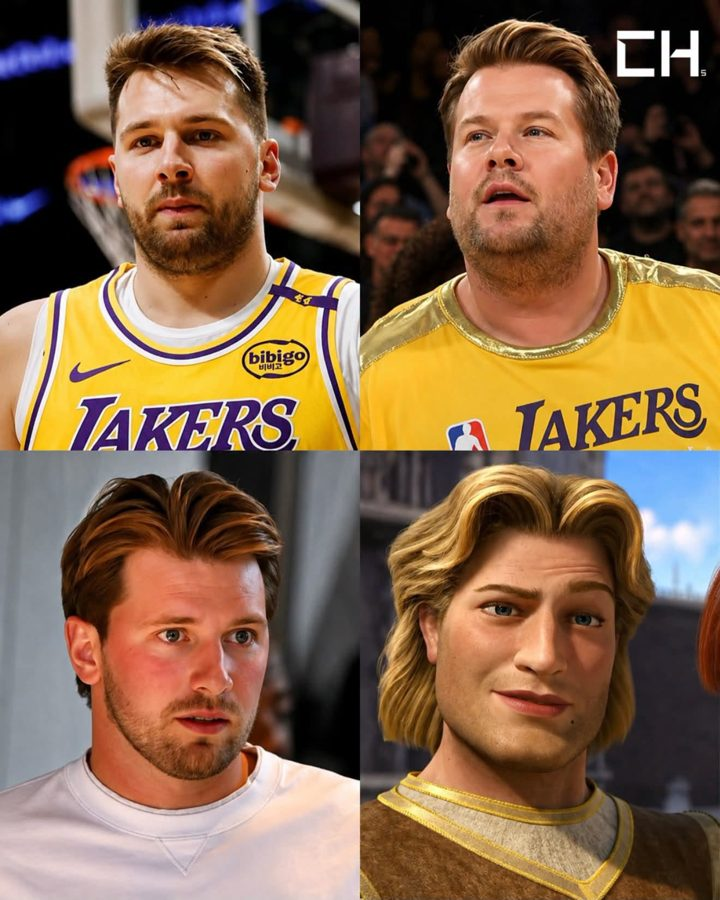
RedditWhat custody battle does to a man
submitted by /u/Thanos_Real_AuraVNCH [link] [comments]
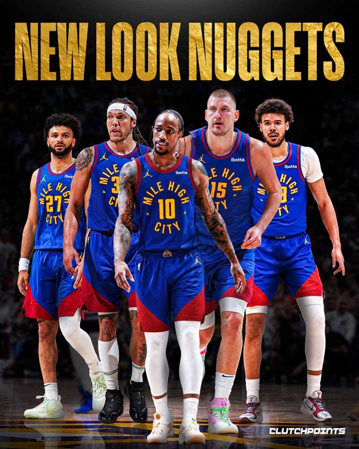
RedditWho's stopping this team?
submitted by /u/Thanos_Real_AuraVNCH [link] [comments]
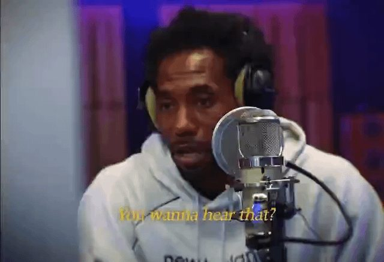
Redditthe investigation done turned Kawhi into an influencer😅
submitted by /u/WhenMachinesCry [link] [comments]
RedditNBA 2K27 is bringing major new features, including MyCAREER Eras, allowing players to step into NBA history and face legendary stars. Me at warm ups before Malice at the Palace:
submitted by /u/WhenMachinesCry [link] [comments]
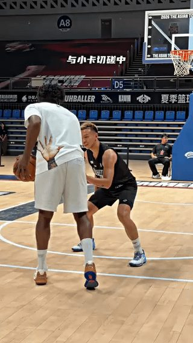
RedditKawhi appears to tweak his ankle playing in China,
submitted by /u/Outrageous_Cup6081 [link] [comments]
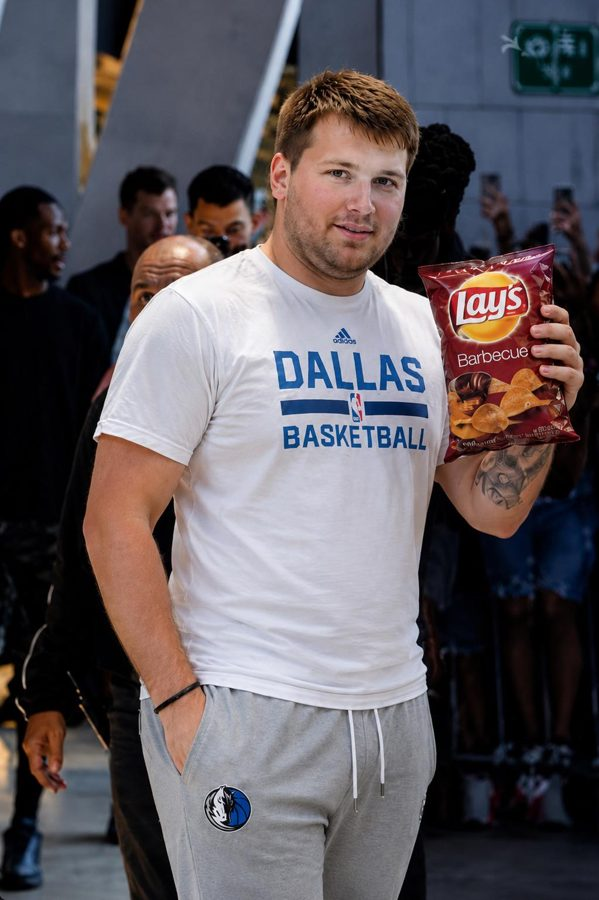
RedditLuka turning heads at his Pop and Chip party, summer 2024
submitted by /u/rpgmgta [link] [comments]
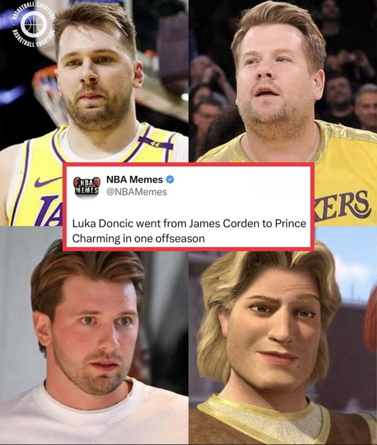
RedditHopefully Prince Charming can still cook like James Corden
submitted by /u/Embarrassed-Drop-987 [link] [comments]
RedditLukawise Gamgee spotted having second breakfast in Slovenia with fellowship
submitted by /u/FrankLloydAight [link] [comments]
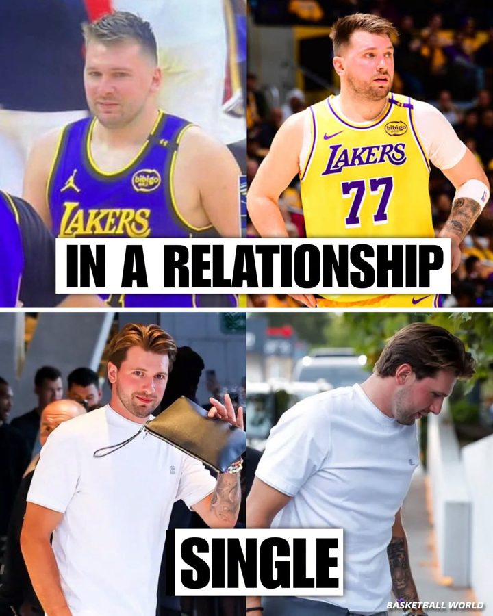
RedditBreakups really be doing something to a man
submitted by /u/Thanos_Real_AuraVNCH [link] [comments]
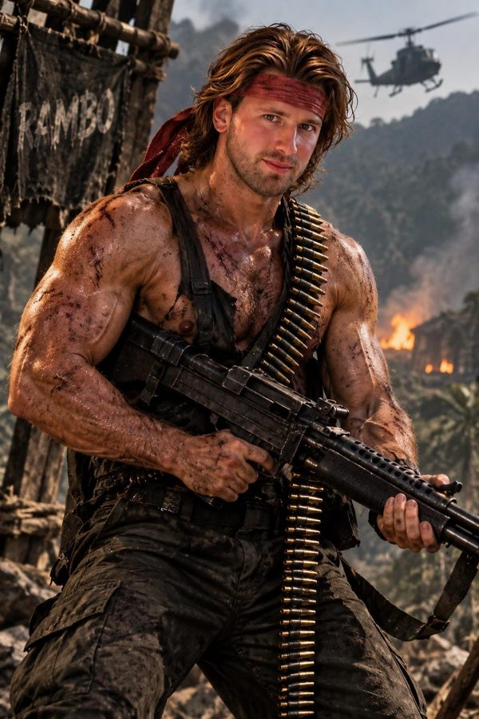
RedditLuka ready for this season
submitted by /u/nj23dublin [link] [comments]
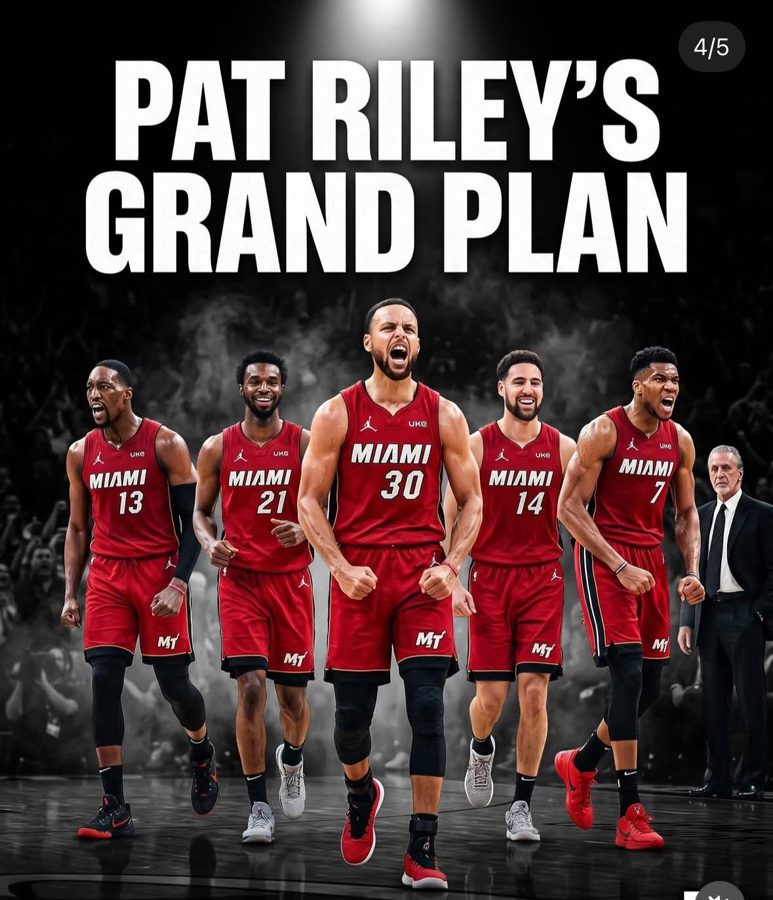
RedditNBA Maxxing Vibes.
I think they win 3 rings and ruin the league!! If curry doesn’t sign an extension on aug 29th and becomes a free agent in 2027 things might
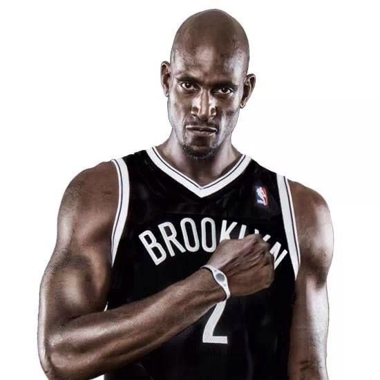
RedditIf LeBron does any of these poses for Media day this year it’s over 😭
submitted by /u/smuttygirl_foru [link] [comments]
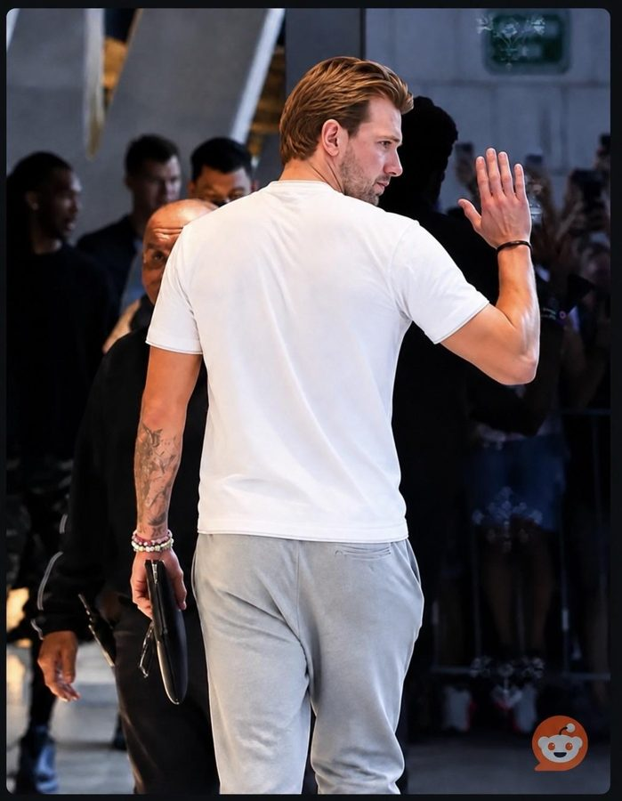
RedditLuka LEAVING after being abused on subreddits by waves of ai memes.
submitted by /u/Amazing_Goose2683 [link] [comments]
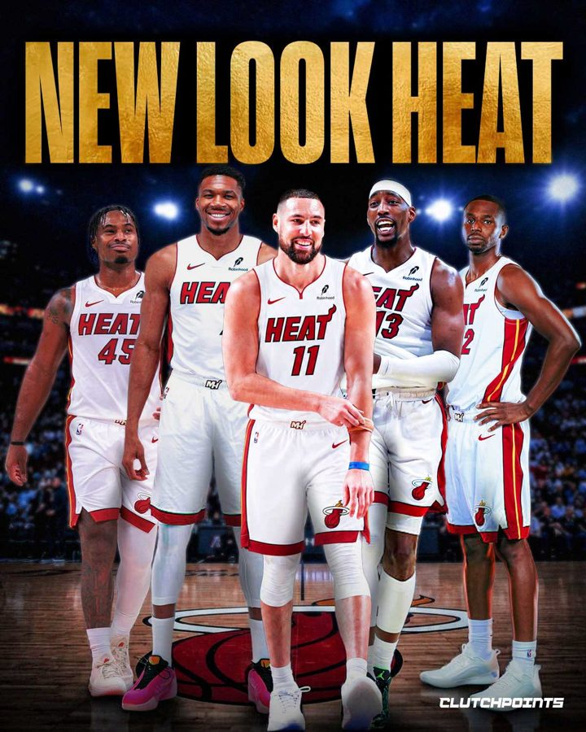
RedditHow far is this team getting?
submitted by /u/Thanos_Real_AuraVNCH [link] [comments]